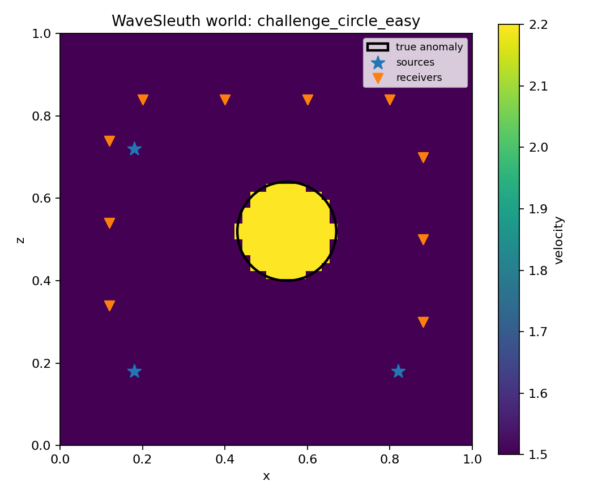
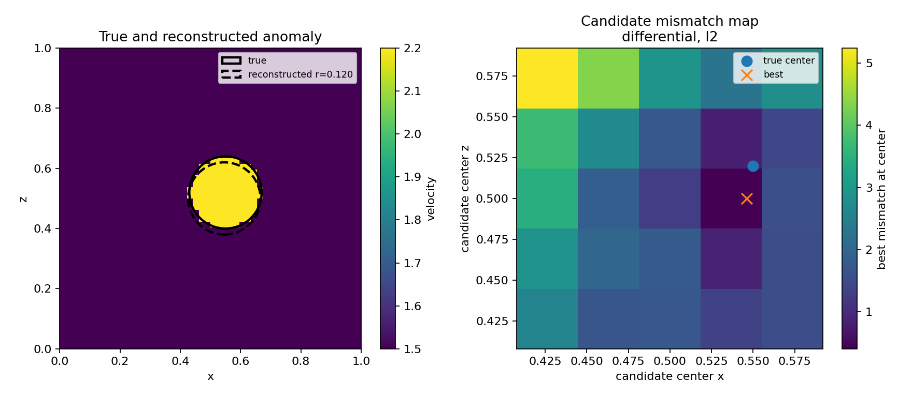
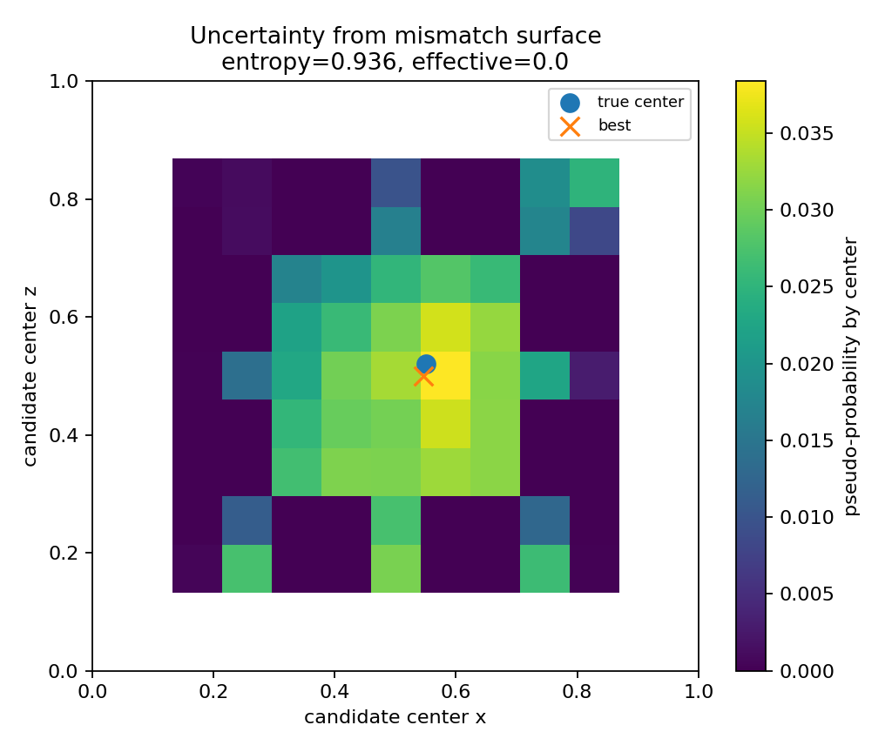
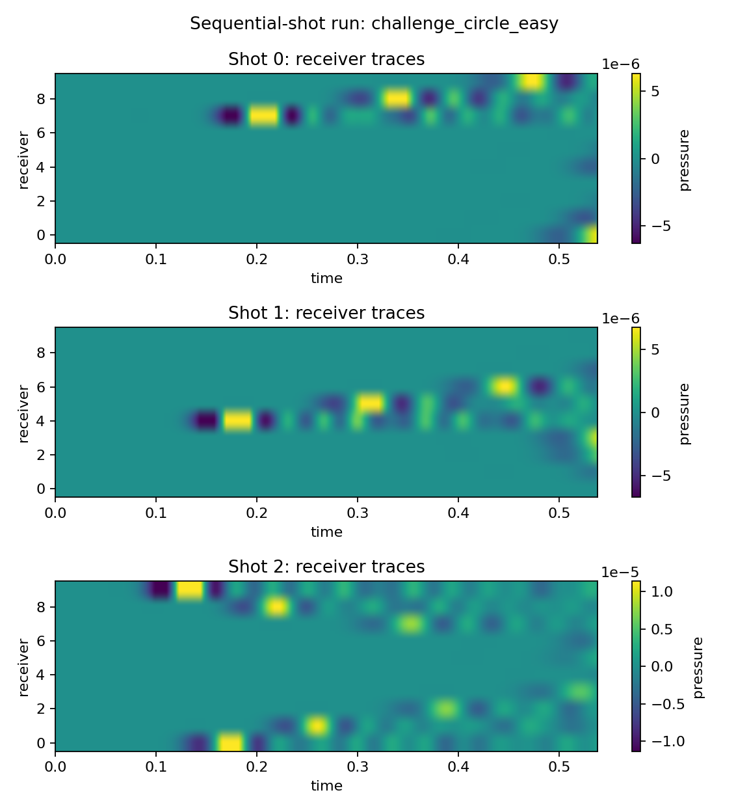

Generated from challenge_easy/runs/circle-easy_recon.json.
{
"best_mismatch": 0.4070723295211332,
"center_error": 0.020396077306247824,
"iou": 0.8,
"normalized_center_error": 0.014422204572852888,
"radius_error": 0.0,
"reconstruction_score": 0.8,
"supported": true
}
{
"anomaly_velocity": 2.2,
"center_x": 0.5460000038146973,
"center_z": 0.5,
"index_x": 3,
"index_z": 2,
"level": 1,
"mismatch": 0.4070723295211332,
"radius": 0.12
}
{
"background_subtracted": true,
"metric": "l2",
"mismatch_mode": "differential",
"normalize_traces": false,
"shot_mode": "sequential",
"time_max": null,
"time_min": null
}
{
"anomaly_velocities": [
2.2
],
"radii": [
0.12
],
"search_radius": false,
"search_velocity": false
}
{
"anomaly_velocities": [
2.2
],
"background_forward_runs": 1,
"evaluated_candidates": 49,
"forward_runs": 50,
"grid_size": 5,
"margin": 0.132,
"possible_candidates_per_level": 25,
"radii": [
0.12
],
"refine_levels": 1,
"xs": [
0.40799999237060547,
0.45399999618530273,
0.5,
0.5460000038146973,
0.5920000076293945
],
"zs": [
0.40799999237060547,
0.45399999618530273,
0.5,
0.5460000038146973,
0.5920000076293945
]
}




[ "Grid search assumes a circular anomaly.", "Differential mode compares hidden-minus-background residual traces and is usually less fooled by direct arrivals.", "v0.3 can scan radius and anomaly velocity, but local refinements currently refine center position only.", "The mismatch map minimizes over searched radius/velocity at each candidate center.", "The optional sponge boundary is a simple damping layer, not a production PML." ]